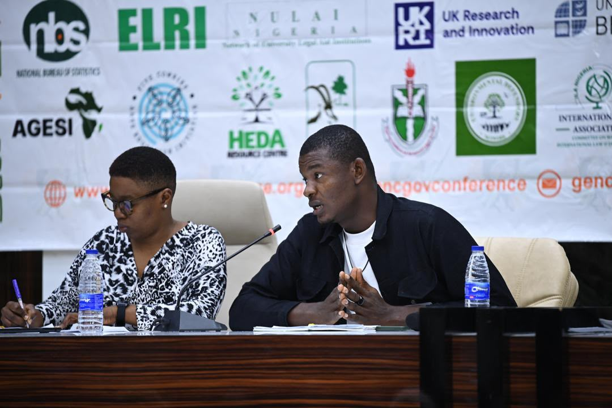

How he works
Builds donor relationships across a multi-state SRHR/GBV portfolio, treating fundraising as an ongoing relationship rather than a one-time ask.
- Leads donor strategy and partnership development, designing and delivering donor pitches and sensitization sessions rather than relying on cold proposals
- Draws on hands-on research experience, including ethnographic and evaluation work, to ground funding pitches and proposals in evidence rather than assumption
- Organises donor engagement events and stakeholder meetings that convert into renewed and expanded commitments
- Conducts donor intelligence and donor mapping, tracking funder priorities and emerging funding trends
- Maintains and updates a donor database, tracking donors' interests over time

Organisations & funders
Selected organisations, funders, and partners connected to his professional and programme experience.
Organisations
- YNCSD
- Circuit Pointe Charity Foundation
- Institute of Human Virology Nigeria (IHVN), International Research Center for Excellence
- Sustainable Community for Health and Wellbeing
Funders & partners
- AmplifyChange
- Girls First Fund
- MAMA Network
- GIZ
- Korean SHE Foundation
- Global Fund for Women
Consulting engagements
- Grassroots People and Gender Development Center
- SRHR Expert, Deutsche Gesellschaft für Internationale Zusammenarbeit (GIZ) — expert speaker on GBV and SRHR for a brown bag lunch session under PEACECORE: Strengthening Capacities for Conflict Transformation and Livelihood for Groups in Vulnerable Situations in Nigeria's Central Zone
- SRHR Expert, Brot für die Welt (Bread for the World) — Gender & Inclusion Capacity-Building Workshop for DPS Academy Participants
Selected impact
Major grants secured
AmplifyChange — Move2Act
£200,000 secured for "Move to Act: Accelerating Coordinated Advocacy for Improved Abortion Laws and Policies in Nigeria."
AmplifyChange — PAMOJA I
£70,000 secured for PAMOJA I: SRHR Access to Commodities and Information, focused on movement building among CSOs and supporting a grassroots-led movement to advance SRHR-friendly policy in Lagos State, producing the PAMOJA AC Legal and Policy Analysis Report on SRHR policies in the state, published June 2025.
AmplifyChange — PAMOJA II
£180,000 secured for PAMOJA II: Advancing Reproductive Justice Through Strategic Policy Engagement and Equitable Service Access in Nigeria.
Girls First Fund — Changemakers Grant
$303,000 secured for YNCSD's work preventing and responding to child marriage and early unions, running November 2024 to October 2027.
MAMA Network — "Hidden Realities," Gwagwalada, FCT
$100,000+ secured to fund an ethnographic study on abortion and SRHR access barriers in Gwagwalada, FCT, an evidence base now informing programme design in the area.
GIZ — PEACECORE Project, Kaduna
40 million+ Naira secured for YNCSD, supporting PEACECORE: Strengthening Capacities for Conflict Transformation and Livelihood for Groups in Vulnerable Situations in Nigeria's Central Zone. The relationship began with direct outreach following the 10th Human Rights Symposium, leading to a formal partnership visit at the PEACECORE II office.
Additional funded work & initiatives
Korean SHE Foundation — Flood & Coastal Erosion Resilience, Kogi State
$3,000 secured for "Enhancing Community Resilience to Flooding and Coastal Erosion through Inclusive and Gender-Sensitive Strategies in Kogi State," under the Step Up Green Climate Warriors Initiative.
SafeBank — AI-Powered SRHR & Safe Abortion Information Platform
Developed by YNCSD, SafeBank is an AI-powered platform designed to provide SRHR and safe abortion information, extending programme reach into digital SRH.
LINKS — Abuja
Linking and Learning to Improve Access to SRHR Commodities and Resources among female sex workers and LBQ women in Abuja, funded by Global Fund for Women, providing pill access to over 450 women across these groups.
Circuit Pointe — Grant Portfolio Management
Reviewed 2,000 grant applications and managed a $50,000 subgrant portfolio, reaching 1,200 youths through Circuit Pointe's subgranting programme.